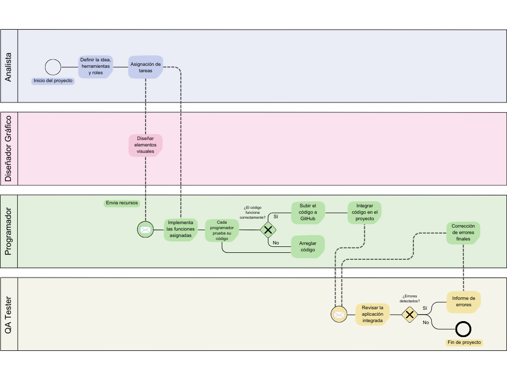

Seguimiento
Para llevar a cabo este proyecto, lo primero será consolidar la idea principal, definiendo claramente los objetivos y las funcionalidades clave. Dado que se trata de un trabajo en equipo, el plan será dividir las tareas de manera equitativa, asignando a cada miembro la responsabilidad de desarrollar una entidad específica, incluyendo su CRUD y la tabla correspondiente. Además, algunas partes generales del sistema se asignarán en conjunto o se repartirán según la experiencia y disponibilidad de cada miembro en distintos momentos del desarrollo. El seguimiento del proyecto se realizará mediante el uso de Odoo y GitHub. Odoo se empleará como herramienta principal para la gestión de tareas, permitiendo asignar, controlar y visualizar el progreso de cada actividad. GitHub será utilizado para gestionar el código y las versiones, asegurando una integración constante de los avances del equipo. Además, Google Drive se utilizará para almacenar y compartir documentación relevante, recursos y material de apoyo, asegurando que toda la información esté disponible y accesible para todos los miembros del equipo en todo momento. Durante el proceso, se mantendrá una comunicación constante entre los miembros del equipo, con reuniones periódicas para revisar el avance de las tareas, discutir cualquier dificultad y proponer soluciones de manera colaborativa. El progreso será actualizado regularmente en las herramientas mencionadas, lo que permitirá ajustar el flujo de trabajo y las prioridades según las necesidades del proyecto.
Evaluación
Para asegurarnos de que el software cumpla con lo que esperamos, vamos a hacer una evaluación continua durante todo el desarrollo. Esto incluye revisar el código y comprobar que la aplicación funcione correctamente. El objetivo será asegurarnos de que todo esté en orden y que el sistema tenga el rendimiento que buscamos. Las pruebas que haremos incluyen verificar que cada parte del proyecto funcione como debería, detectar posibles errores y evaluar si el comportamiento de la aplicación es el correcto. Si encontramos problemas o fallos que afectan de forma general al funcionamiento de la app o errores complejos, analizaremos juntos qué pasó y buscaremos la mejor solución. Todo el equipo estará involucrado en el seguimiento de las tareas y la validación del software. Mantendremos una comunicación constante para estar al tanto de cómo avanzan las tareas, compartir lo que vamos encontrando y ayudarnos mutuamente a resolver cualquier problema. Este enfoque nos ayudará a mejorar continuamente el proyecto y asegurarnos de que el producto final sea de buena calidad.
Diagrama BPMN
A continuación se presenta el diagrama BPMN que ilustra los procedimientos de seguimiento y evaluación del proyecto. Este diagrama ayuda a visualizar y entender mejor el flujo de actividades y la coordinación entre los diferentes miembros del equipo.
